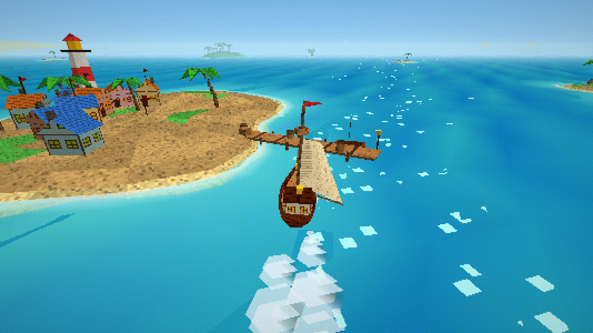
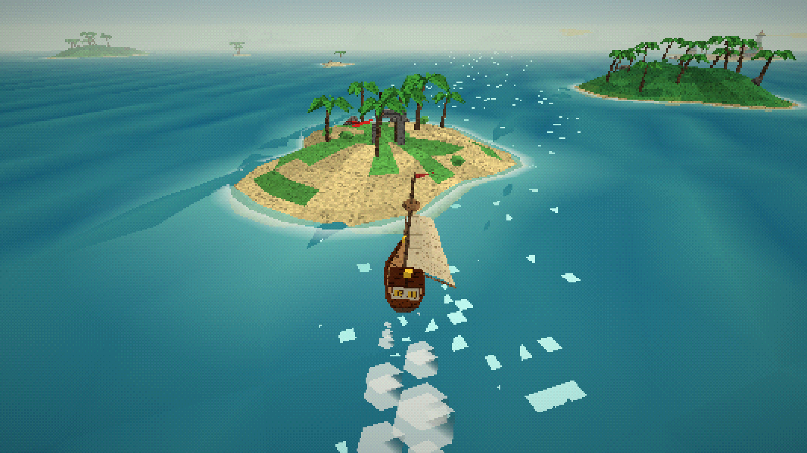
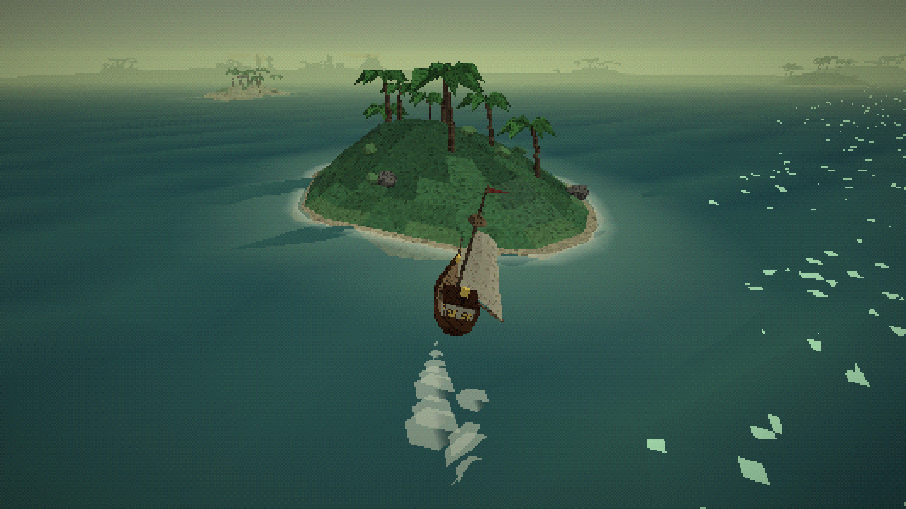
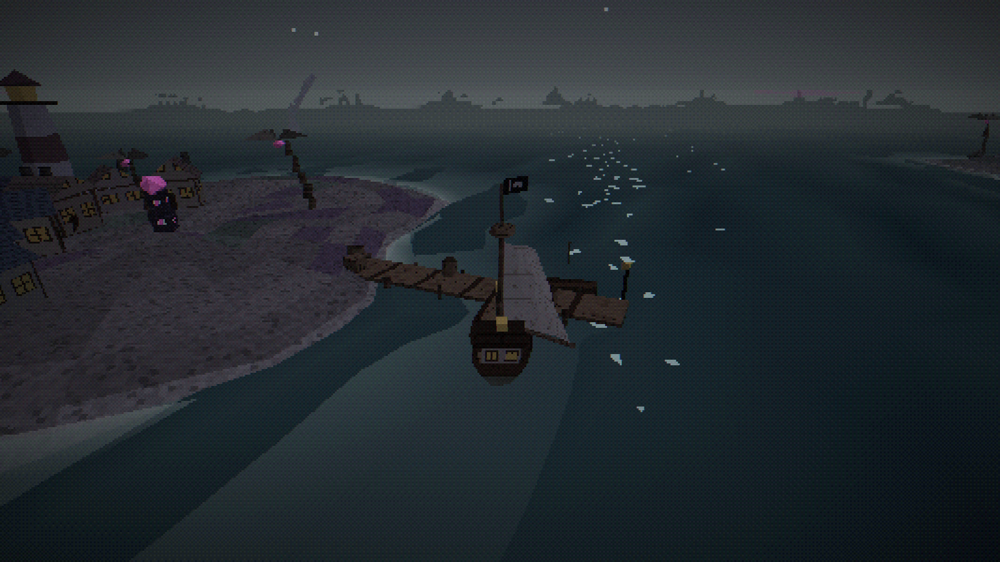
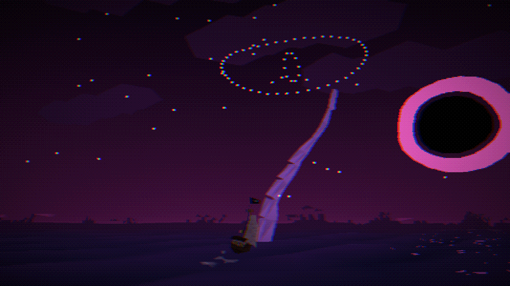
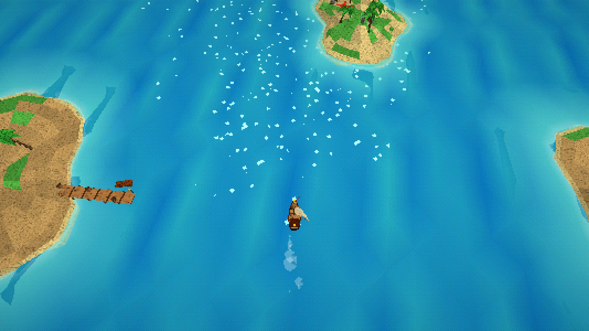

In-engine concept frames from the vertical slice — the same world, five stages of dread. Everything here is rendered live (low-res target, vertex snapping, 15-bit dither).

1 · HOME WATERS Turquoise shallows, a tidy harbour, a lighthouse. Gulls, shanties, nothing to fear.

2 · SOMETHING'S OFF Paler sky, quieter sea. A gull stares a beat too long. The harbour keeper repeats himself.

3 · WRONG Sickly green haze, desaturated palms, glowing fungus in the undergrowth, standing stones nobody built.

4 · EERIE Dead palms, a black flag at the masthead, lit windows with nobody home, a totem in the square. Vertex wobble gets coarser.

5 · COSMIC A black sun with a corona. The stars have rearranged themselves into an eye. Something enormous is rising from the water. The PS1 rendering itself starts to fail: chromatic split, screen wobble, a camera that will not hold still.

CAMERA RANGE Drag to tilt: from low "third person" (see the horizon, the sky, the horrors) to near top-down for navigating. Default sits in between.
Shipped in the slice: sailing with real wind rules, streamed procedural islands (sandbars, jungle, rock spires, treasure isles, harbour towns), treasure digging, captain's log, five dread stages with swapped decor and palette.